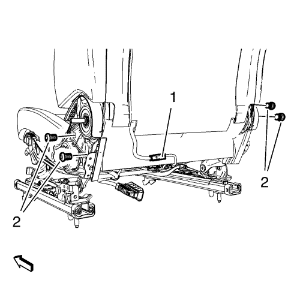
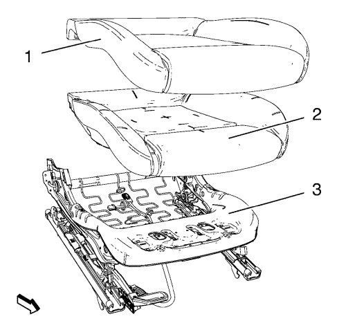

Sustitución del acolchado y la cubierta del cojín del asiento delantero
Procedimiento de desmontaje
Advertencia: Consulte Aviso SIR en la sección Prólogo.
Advertencia : Sustituya el sistema de detección del pasajero como un conjunto completo, a fin de evitar provocar lesiones al acompañante. El depósito flexible, el sensor de presión, el cojín del asiento y el módulo de control están montados y calibrados como una unidad. Utilizar únicamente algunos de los componentes del equipo de servicio provocará el funcionamiento incorrecto del sistema de detección del pasajero.
- Desmonte el asiento del conductor o el acompañante. Consultar Sustitución del asiento del conductor o el acompañante .
- Desmonte el panel de revestimiento interior del cojín del asiento delantero. Consultar Sustitución del panel de revestimiento interior del acolchado del asiento delantero .
- Desmonte el panel de revestimiento exterior del cojín del asiento delantero. Consultar Sustitución del panel de revestimiento exterior del acolchado del asiento delantero .

- Suelte la cubierta del acolchado del respaldo del asiento.
- Suelte y desconecte el enchufe del mazo de cables (1), si existe.
- Desmonte los 4 tornillos del respaldo del asiento delantero (2).
- Desmonte el respaldo del asiento.

- Suelte la cubierta del cojín (1) todo alrededor del marco del asiento (3).
- Desmonte del marco la cubierta del acolchado junto con el acolchado.
- Desmonte del acolchado la cubierta del acolchado (2).
Procedimiento de montaje
- Monte la cubierta del cojín (1) en el acolchado (2).
- Ponga en el marco la cubierta del acolchado junto con el acolchado (3).
- Enganche la cubierta del cojín alrededor de todo el marco del asiento.
- Monte el respaldo del asiento.
Precaución: Consulte Precaución con las fijaciones en la sección Prólogo.
- Apriete 4 tornillos del respaldo de asiento delantero (2) a 35 N·m (26 lib. pie)
- Conecte y fije el enchufe del mazo de cables (1), si existe.
- Fije la cubierta del acolchado al respaldo del asiento.
- Monte el panel de revestimiento exterior del cojín del asiento delantero. Consultar Sustitución del panel de revestimiento exterior del acolchado del asiento delantero .
- Monte el panel de revestimiento interior del cojín del asiento delantero. Consultar Sustitución del panel de revestimiento interior del acolchado del asiento delantero .
- Monte el asiento del conductor o el acompañante. Consultar Sustitución del asiento del conductor o el acompañante .
| © Copyright Chevrolet. All rights reserved |